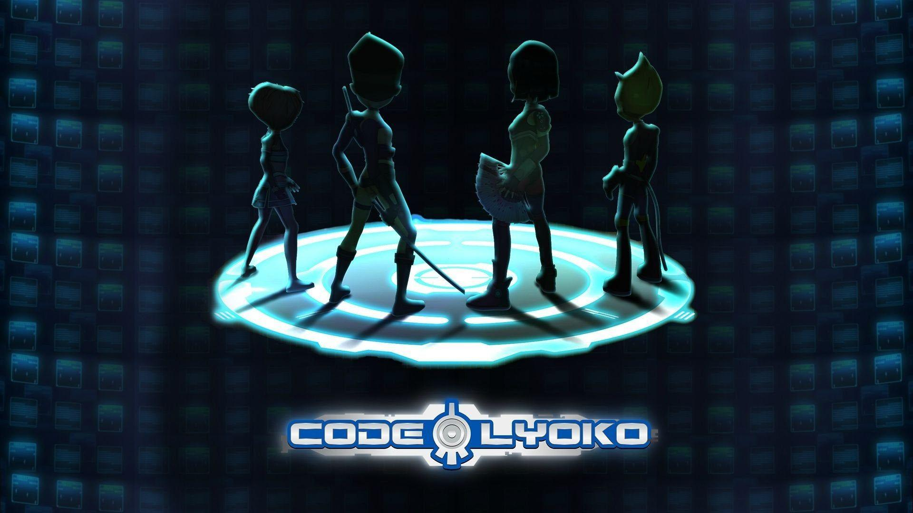

Mes inspirations
Mes premiers pas dans le monde de la cybersécurité et l'informatique furent berçés par différentes oeuvres. La première ? Tron Legacy, je sais un peu ringard, mais un des films qui m'a attirée vers l'informatique et la moto !
Tron Legacy

Futurama

Code Lyoko
WatchDogs 2

WatchDogs 2 est un point particulier où la cybersécurité est entrée en jeu, au delà de l'informatique. Ce jeu à berçé mon enfance et celle de beaucoup d'informaticiens actuels. Je tiens à préciser à quel point il est important dans mon parcours et ma passion, mais vous aurez l'occasion de le remarquer puisque le jeu apparaît réfulièrement sur mon Portfolio, de manières différentes ;)

Mr Robot

Ready Player One